Roboilo jest naukowym kołem zainteresowań skupiającym utalentowanych uczniów ILO w Gdańsku z zainteresowaniami techniczno inżynieryjnymi.
Zajmujemy się rozwijaniem umiejętności przez budowę i programowanie autonomicznych robotów. Uczymy się kreatywnego myślenia, obróbki materiałów, obsługi narzędzi projektowania CAD, oraz druku 3D.
Klub zapewnia możliwości rozwoju jak również konieczne podstawy teoretyczne i zaplecze techniczne do realizowania pasji związanych z robotyką przez uczniów.
Absolwenci koła kontynuują swoje pasje działając w wielu sektorach związanych z robotyką jak budowa łazików marsjańskich przy PWr czy budowa satelitów przy PW. Koło jest aktywnie wspierane przez wielu absolwentów
Jesteśmy szczególnie dumni z tego, że roboty są zaprojektowane i wykonane w całości przez nas. Nie korzystamy z gotowych platform komercyjnych.
Wykorzystujemy druk 3D, obróbkę CNC i projektowanie CAD. Tworzymy między innymi własne układy przeniesienia napędu czy obudowy z materiałów kompozytowych
Projektujemy własne obwody elektroniczne w oparciu o mikrokontrolery STM, które programujemy w IDE.
Badamy właściwości i modyfikujemy skład chemiczny opon aby dobrać je optymalnie do naszych potrzeb.
Co robimy
Nasze projekty
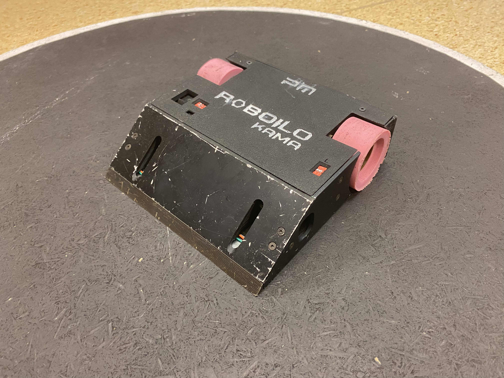
Kama
Drugi najstarszy robot w naszej kolekcji, zaczynał od kontrolera AVR obecnie działa na systemie STM32, który stał się naszym ulubionym między innymi przez doświadczenia nabyte przy tej konstrukcji.
Jest to najbardziej utytułowany robot i dalej startuje z sukcesami w każdych zawodach chociaż musi już ustępować miejsca na podium "Hiroshimie"
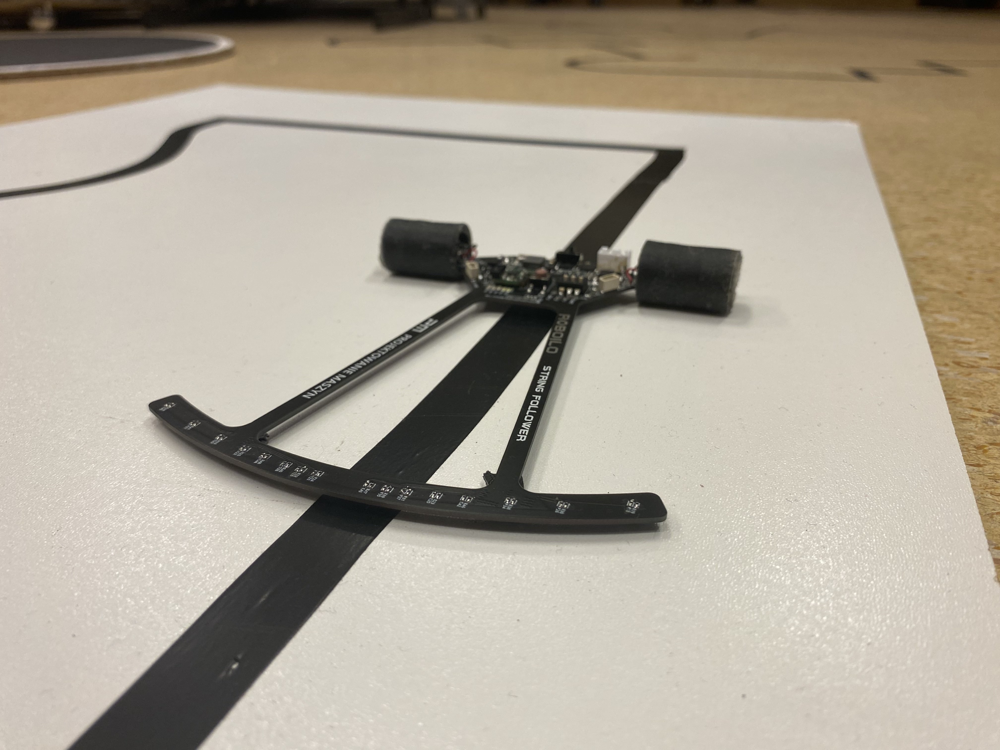
stringFollower
Nasz poważniejszy debiutancki robot w kategorii LineFollower pokazujący nasze możliwości i będący eksperymentem konstrukcyjnym. Robot posiada 2 procesory STM32 na autorskim laminacie gwarantujące ogromn mocy obliczeniowej, tym co odróżnia go od innych robotów w kategorii jest jego masa, która jest jedną z najniższych możliwych do osiągnięcia.
Projekt jest cały czas w fazie rozwoju i pojawia się w nim wiele zmian ale liczymy, że finalnie będze w czołówce swojej kategorii.
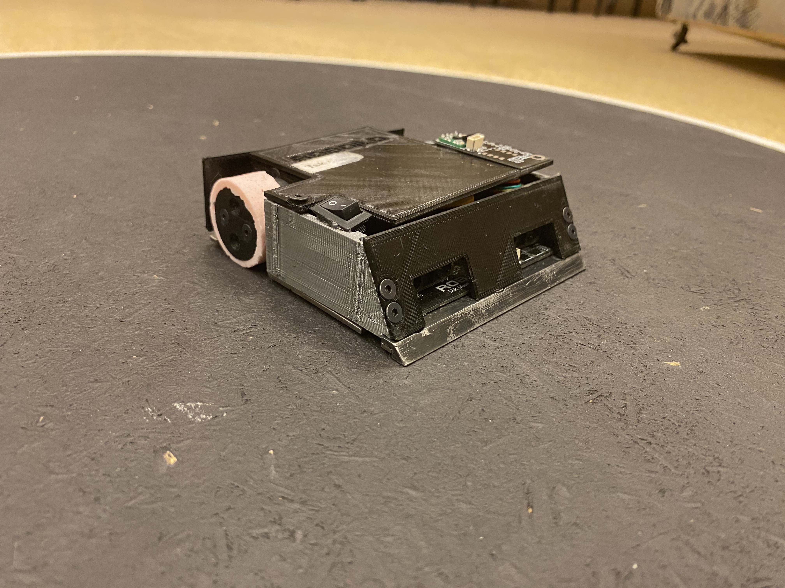
Ser
Nasz jedyny reprezentant w kategorii Minisumo w własnym laminatem baujący na środowisku STM32, jego cechą szczególną są silniki przeniesione z wyższej kategorii Sumo z zastosowaniem autorskich przekładni czyni to go prawdopodobnie najmocniejszym robotem w swojej kategorii.
Robot ma już wiele zawodów za sobą i nie jden sukces, co ciekawe przez bardzo mocne silniki jest w stanie rywalizować z powodzeniem w wyższej kategorii wagowej.
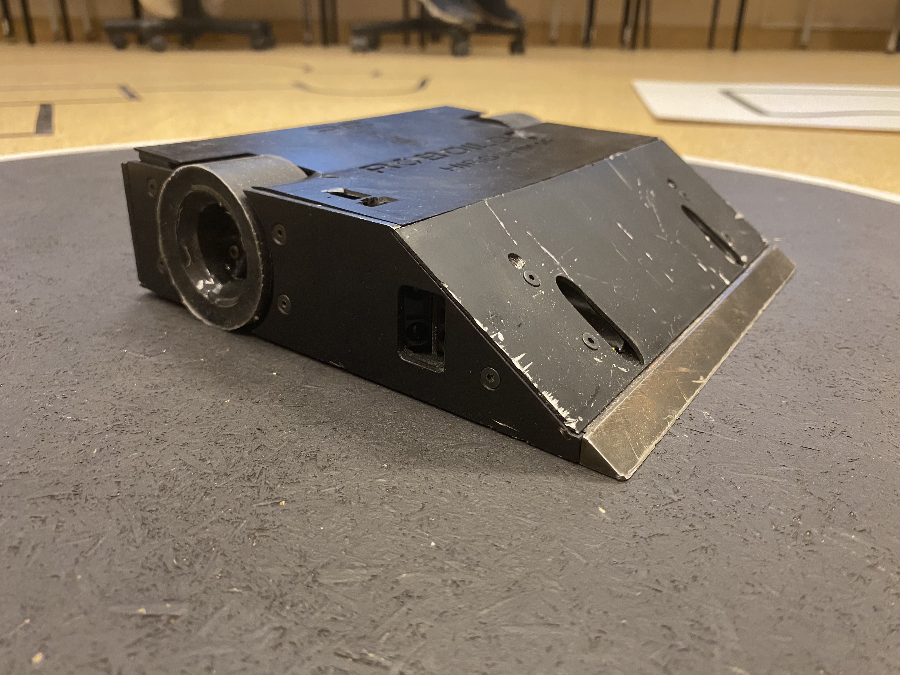
Hiroshima
Flagowy robot Sumo ale również przygotowany do startowania w MegaSumo, posiada autorskie lamianty oraz autorski układ napędowy bazujacy na bardzo mocnych silnikach. Dołączone do nich są przekładnie zaprojektowane przez nas oraz a za sprawne działanie całej kontrukcji odpowiada zaawansowany system sterowania.
Nasz ulubieniec z każdych zawódów przywozi wysokie miejsce na podium, jednocześnie podejmuje już próby rywalizacji w Megasumo.
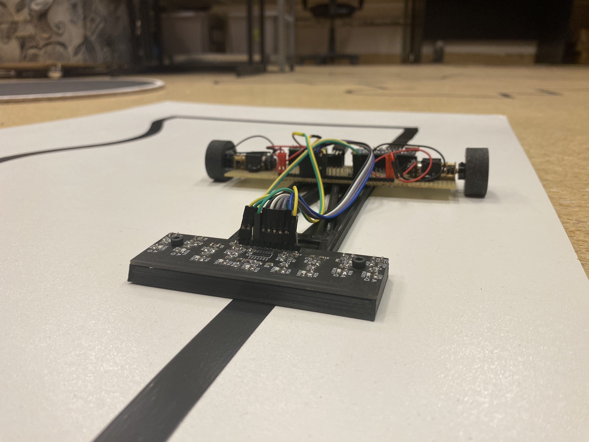
FollowLiner
Prototypowy robot w kategorii LineFollower, cały czas w budowie. Udało mu się zdobyć wyskoie miejsce na nie jednych zawodach ale widzymy w nim jeszcze bardzo duży potencjał na rozwój.
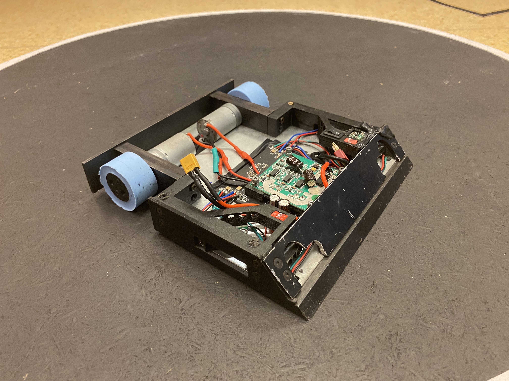
Placek
Jeden z pierszych robotów Sumo jakie u nas powstały, posiada 4 czujniki odległości, 2 czujniki koloru, 2 dość małe silniki oraz zaledwie 3cm wysokości jest to jeden z najniższych robotów w kategorii. Sterowany jest mikroprocesorem STM32F103 umieszczonym na laminacie naszego autorstwa. Jego następcą jest "Piramida" o udoskonalonej budowie zwiększająca jego główny atut czyli rozmiar i kształt mylący dla robotów przeciwników.
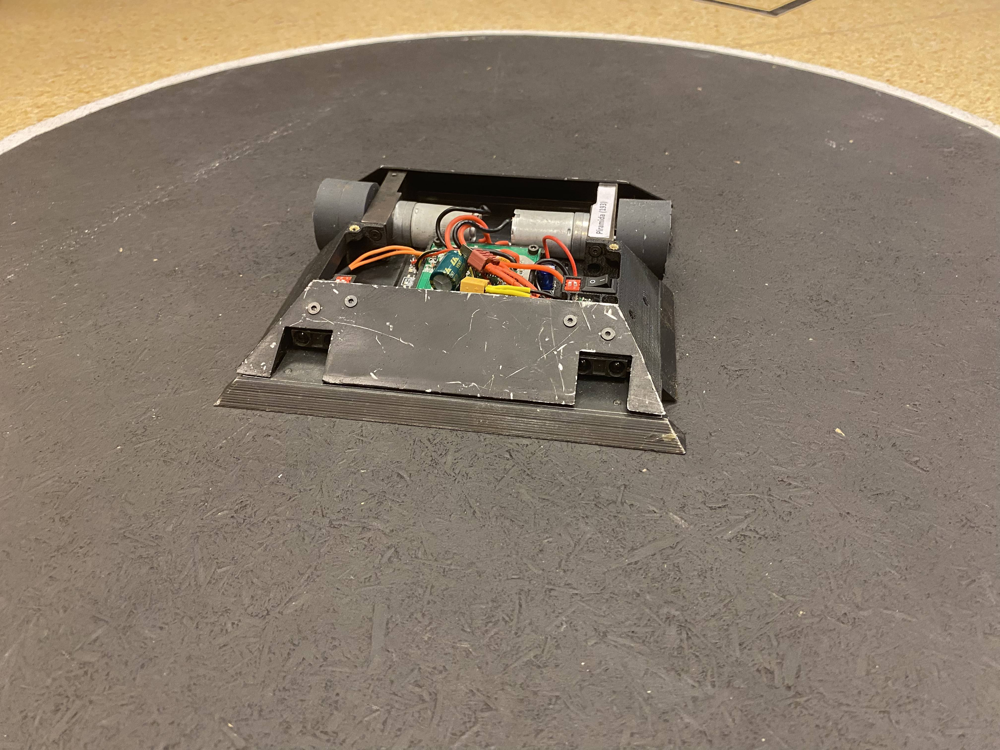
Piramida
Robot Sumo.
Następca "Placka" powstała aby obniżyć do granic możliwości robota w tej kategorii oraz ograniczyć wykrywanie go przez inne roboty przez skosy ze wszystkich stron. Wnętrze podobnie jak w pierwowzorze ma 2 czujniki odległości oraz 2 czujniki koloru. Mikrokontrolerem sterującym całym robotem jest STM32F103 na naszej autorskiej płytce sterującej całym robotem.
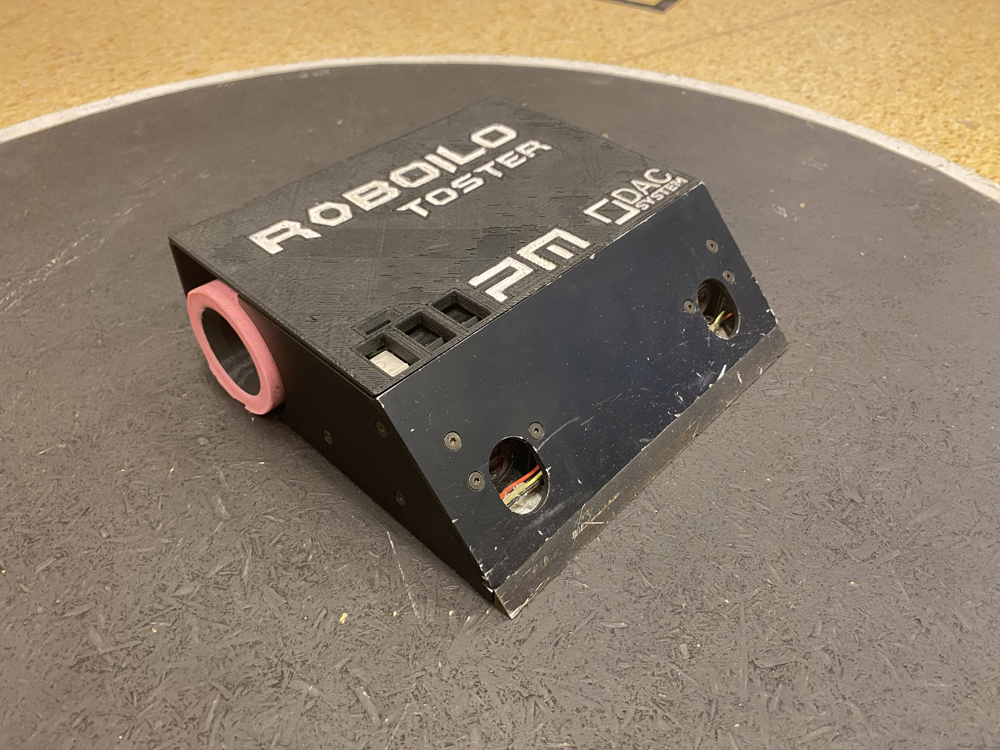
Toster
Nasz najstarszy robot i drugi najbardziej utytułowany. Używa dość starych i mało wydajnych czujników jednak wciąż wystarczających by od czasu do czasu zająć miejsce na podium.
Akademia Roboilo
Zapraszamy na wakacyjne zajęcia z robotami dla dzieci i młodzieży zainteresowanej robotyką, programowaniem czy drukiem 3d.
Wkrótce...Osiągnięcia
Nasze sukcesy
- I, II miejsce Robothon 2026
- 3x I, 3x II miejsce RobON 2025
- I, II miejsce X-CHALLENGE 2025
- I miejsce ROBOCOMP 2025
- I miejsce RoboRAVE World Championship 2025 w Chinach
- I miejsce EastROBO 2025
- I, II, 2x III miejsce Rumble Robots 2025
- 2x I, 2x II, 2x III miejsce RobON 2024
- I, II, IV miejsce X-CHALLENGE 2024
- I, II, III, IV miejsce ROBOCOMP 2024
- I miejsce RoboRAVE World Championship 2024 w Australii
- I, 2x II, 2x III miejsce Rumble Robots 2024
- 2x II, III miejsce RoboRAVE World Championship 2023 w Meksyku
- II miejsce Robotic Arena XII Wrocław 2023
- I, III miejsce Rumble Robots 2023
- I, II, III, IV miejsce ROBOmotion 2022
- 2x I, 3x II, III miejsce DART Kraków 2022
- I, 3x III miejsce Robotic Arena Wrocław 2022
- I, II, IV miejsce ROBOmotion Rzeszów 2021
- II, III miejsce EAST ROBO 2021
- I, II miejsce Robotic Arena XII Wrocław 2020
- I miejsce Sumo Challenge 2019
- I, III, IV miejsce ROBOCOMP 2019
- I, III miejsce Rumble Robots 2019
- I, 2x III miejsce Bałtyckie Bitwy Robotów 2019
- RoboRAVE International, Guangzhou Chiny 2019
- II, III miejsce RoboRAVE Poland 2019
- II miejsce RoboRAVE Germany 2018
- I, II, IV miejsce RoboRAVE Poland 2018
- IV miejsce SumoChallenge Łódź 2017
- III miejsce LegoSumo 2014 na TTR w Gdańsku
- I miejsce TopBOT 2013 w III LO w Gdańsku
- II miejsce 3cityBOT 2013 na Uniwersytecie Gdańskim
- IV miejsce TopBOT 2013 w III LO w Gdańsku
- II miejsce Robo Lions Arena 2012 w Gdańsku
- II miejsce Trójmiejski Turniej Robotów 2012 na Politechnice Gdańskiej
- II miejsce TopBOT 2010 w III LO w Gdańsku
- VIII miejsce Minisumo 2009 na UTP w Bydgoszczy
- I miejsce Trójmiejski Turniej Robotów 2009 na Politechnice Gdańskiej
- 2x I miejsca Sumo Challenge 2009 na Politechnice Łódzkiej
- I miejsce na Lidze Robotycznej 2008/09 w Gdyni
- I miejsce Bionikalia 2008 na Politechnice Warszawskiej
- I miejsce TopBOT 2008 w III LO w Gdańsku
- III miejsce ZnekBOT 2008 w Warszawie
- III miejsce Minisumo 2008 na UTP w Bydgoszczy
- IV i VI miejsce Robotic Arena 2008 na Politechnice Wrocławskiej
- IV miejsce Minisumo 2008 w Gdańsku
- V miejsce ZnekBOT 2008 w Gdyni
2026
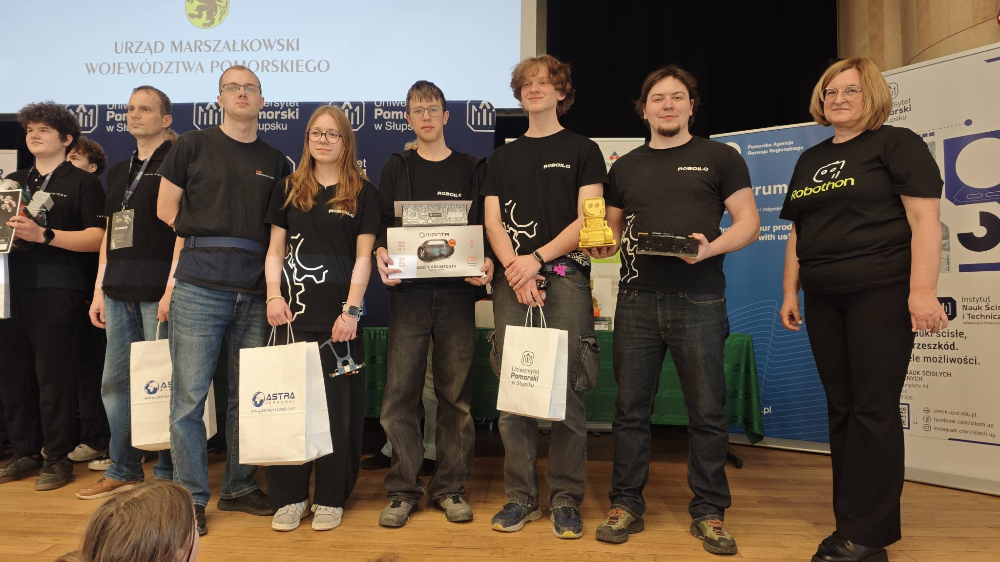
Robothon 2026
I miejsce Hiroshima - Maze Explorer :)
II miejsce - LineFollower
Za nami kolejne zawody tym razem Robothon na Uniwersytecie Pomorskim w Słupsku i... Kolejne zwycięstwo oraz drugie miejsce.
Jednak tym razem inne niż zwykle. Nie było kategorii Sumo, więc Hiroshima wystartowała w Maze Explorer zdobywając pierwsze miejsce. No bo ściana dla naszych robotów nie jest problemem, można przesunąć
Ponadto w kategorii LineFollower już bardziej standardowej zdobyliśmy II miejsce. Bardzo dziękujemy organizatorom za świetne zawody, świetną atmosferę i super zabawę oraz ogromne możliwości nauki, gdyż przygotowanie do zupełnie nowych kategorii było dla nas bardzo fajnym wyzwaniem.
2025
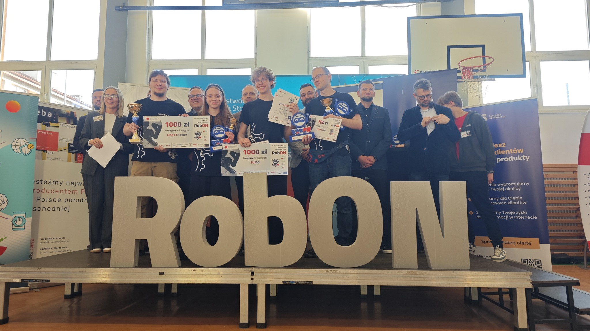
RobON 2025
I miejsce Hiroshima - Sumo Student
I miejsce Kama - Sumo Uczeń
I miejsce String Follower - LF Uczeń
II miejsce WTF - Sumo Student
II miejsce WTF - Sumo Student
II miejsce Mały ale Wariat - Lego Sumo Student
13 grudnia odbyły się zawody RobON na PANS w Krośnie. Bardzo dziękujemy organizatorom, za świetną atmosferę i organizacje. Zawody może nie należą do największych w polsce, ale nie można narzekać na brak konkurencji, a nadrabiają to jakością. Nasza reprezentacja, też skromniejsza niż zwykle - 4 osobowa, ale bardzo zadowolona wróciła z tych zmagań. Poza oczywiście kompletem statuetek, zdobyliśmy wiele doświadczenia i nowych znajomości.
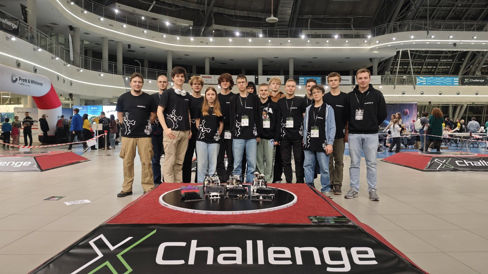
X-CHALLENGE 2025
I miejsce w Sumo zdobył robot WTF
II miejsce w Sumo zdobył robot KAMA
IV miejsce w sumo zdobył robot Maniek
X Challange w Rzeszowie. Nasza 15 osobowa reprezentacja wystawiła łącznie 12 robotów w 5 kategoriach.
Dla najmłodszych uczestników naszego koła był to pierwszy start i okazja do zdobycia bezcennego doświadczenia, co też się w pełni udało. Robot ROBOILO 2 w Lego sumo wszedł do fazy pucharowej. A tymczasem zabieramy się do pracy nad kolejnymi robotami, gdyż za miesiąc startujemy Krośnie
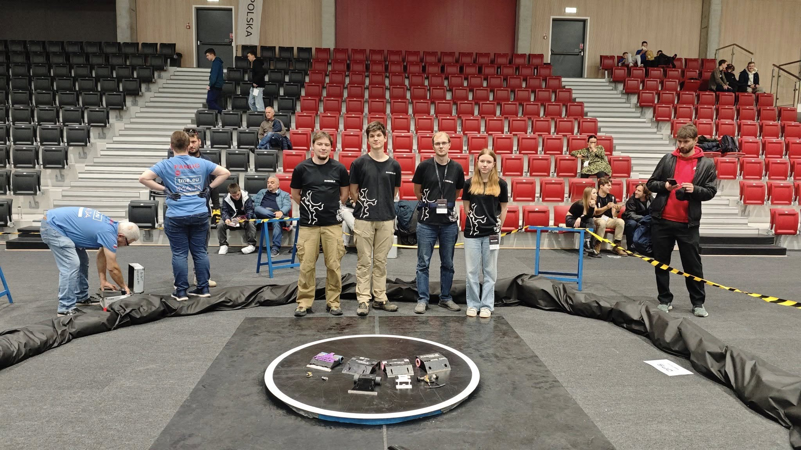
ROBOCOMP 2025
I miejsce Sumo
I miejsce Sumo
Rozpoczęliśmy rok szkolny 2025/2026, od I miejsca na ROBOCOMP 2025 na AGH w Krakowie w kategorii Sumo. Mamy nadzieję, że kolejne wyniki będą jeszcze lepsze.

RoboRAVE World Championship 2025 w Chinach
I miejsce Sumo
Zostajemy mistrzami świata Sumo po raz drugi z rzędu.
Po zeszłorocznym sukcesie w Australii, w tym roku finały RoboRAVE World Championship odbywały się w Pekinie w Chinach.
Międzynarodowa liga robotyczna, na której finały przyjechało kilkaset drużyn z łącznie 16 krajów. Bardzo dziękujemy firmie Projektowanie Maszyn z Pruszcza Gdańskiego za wsparcie w przygotowaniu robotów. Bez was ten sukces nie byłby możliwy Dziękujemy również Fundacja ORLEN im. Ignacego Łukasiewicza za wsparcie finansowe startu w zawodach.
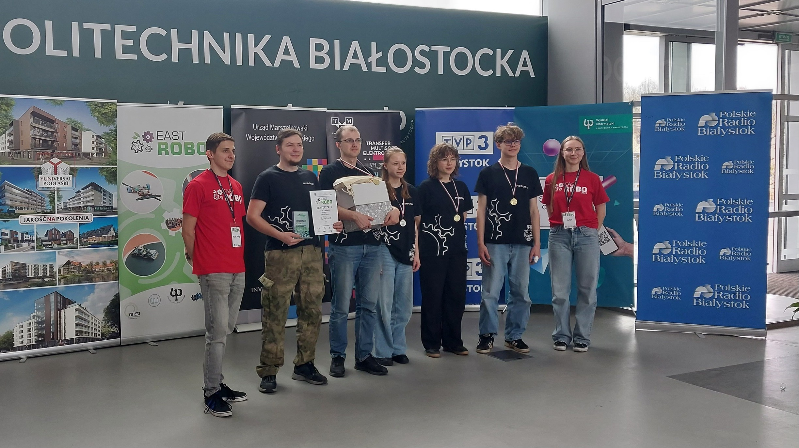
EastROBO 2025
I miejsce - MegaSUMO
Odnosimy pierwszy sukces w MegaSUMO
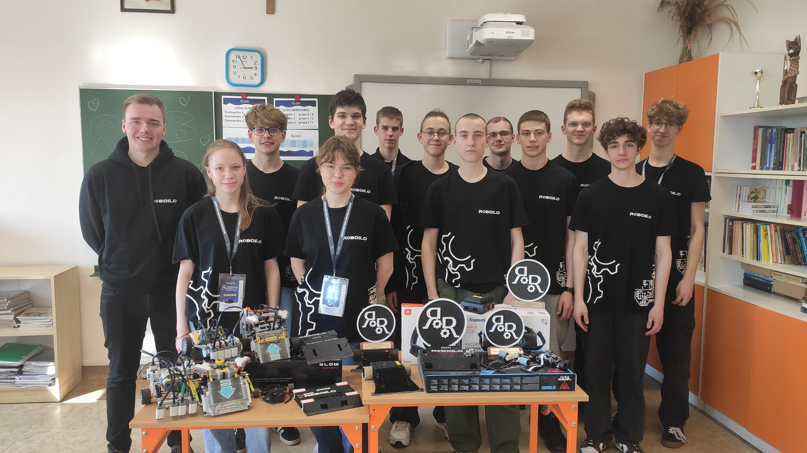
RumbleRobots 2025
I, II, III miejsce - Sumo 1KG
III i IV miejsce - Linefollower
Jak zawsze wcześniej czekały nas intensywne przygotowania i rozwiązywanie problemów technicznych już na zawodach. Wracamy zadowoleni i zdeterminowani na więcej. Po zawodach mieliśmy chwilę na odpoczynek i regenerację wraz z degustacją przysznych ciast i przekąsek. Za co serdecznie dziękujemy organizatorom. Chcielibyśmy aby taka gościnność była wszędzie.
2024
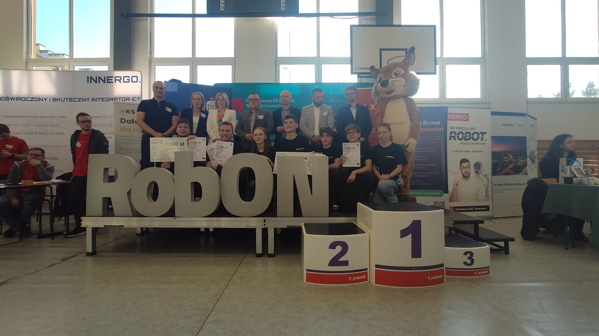
RobON 2024
I miejsce Hiroshima
II miejsce Piramida
III miejsce Kama
I miejsce Turbo Kama
II miejsce Maniek
III miejsce Dyzio w kategorii Linefollower
Zaczęliśmy rok szkolny od Hattricka, a prawie podwójnego. Na zawodach RobON w Krośnie zdobywamy kolejne I miejsca w kategorii sumo. To trzecie zawody z rzędu w ciągu 3 tygodni które wygrywamy. A dlaczego prawie podwójny? Otóż stanęliśmy na podium w 3 kategoriach. Ogromnie gratulujemy wszystkim uczestnikom. Mimo, że za zwyczaj nie jesteśmy zwolennikami podziału wiekowego uczestników, to miło było nie konkurować z własnymi uczniami, natomiast jesteśmy dumni, że nasi uczniowie są dla nas najgrozniejszymi rywalami i vice versa.
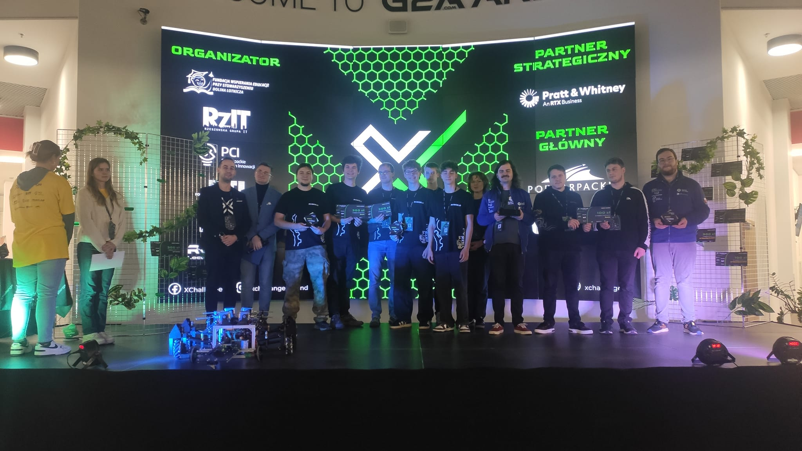
X-CHALLENGE 2024
I miejsce w sumo: Maniek
II miejsce w sumo: Kama
IV miejsce w sumo: Hiroshima
W zeszłym tygodniu wzięliśmy udział w zawodach x-challange w Rzeszowie. Zawody zakończyły się sukcesem. Ponadto nasi najmłodsi zawodnicy zdobyli również IV miejsce w kategorii Lego Linefollwer. Gratulujemy wszystkim wyników
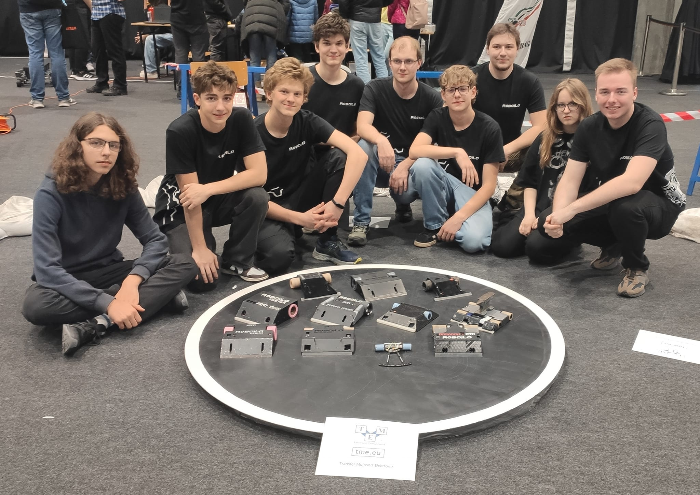
ROBOCOMP 2024
I miejsce Toster
II miejsce Maniek
III miejsce Turbo Kama
IV miejsce Piramida
Robocomp 2024 już za nami. Poszło nie najgorzej, niestety zabrakło dla nas miejsc na podium.
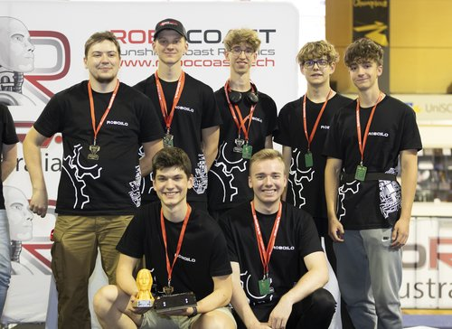
RoboRAVE World Championship 2024 w Australii
I miejsce w sumo 1KG HS
Mamy To!
Turbo KAMA zdobywa I miejsce na RoboRAVE World Championship 2024 w Australii. Tym samym zdobyliśmy tytuł mistrzów świata!
Ogromne gratulacje dla całej drużyny, w szczególności Mateusza, Dziękujemy też wszystkim uczestnikom za przybycie, cenne doświadczenie i możliwość sprawdzenia się na tak dużym evencie. Najcenniejsze jest dla nas jak zawsze zdobyte doświadczenie, którego zebraliśmy bardzo dużo i gwarantujemy, że w przyszłości będziemy budować jeszcze lepsze roboty. Bardzo dziękujemy firmie PROJEKTOWANIE MASZYN. Bez waszej pomocy nie byłoby możliwe zbudowanie tak zaawansowanych konstrukcji oraz udział w tym wspaniałym przedsięwzięciu.
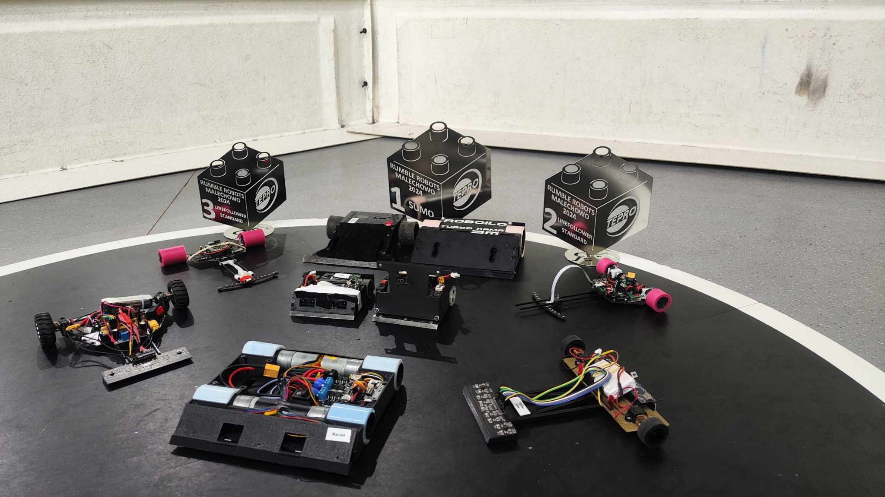
RumbleRobots 2024
I, II i III miesjce w SUMO 1KG
II, III i IV miejsce w Linefollower Standard
Zawody były bardzo wymagające a przeciwników było naprawdę sporo. Jesteśmy zadowoleni z ogólnych wyników, aczkolwiek również przekonani, że stać nas na więcej. Dlatego jesteśmy tym bardziej zmotywowani by dalej usprawiać i poprawiać nasze roboty. Cieszymy się również, że rywali przybywa i przywożą coraz bardziej zaawansowane i wymagające roboty.
2023
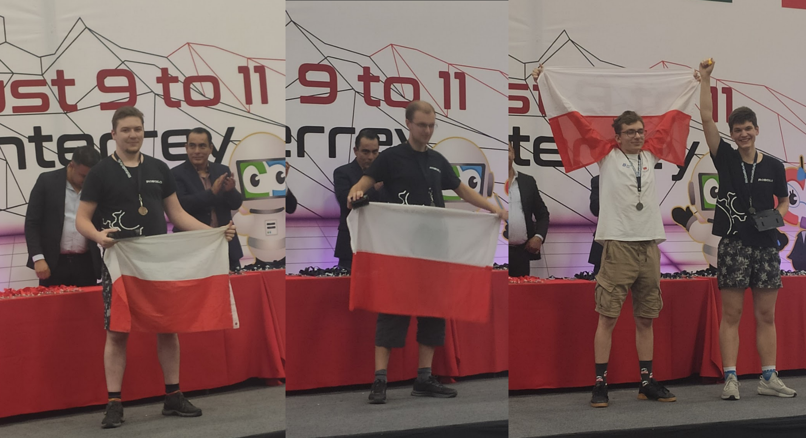
RoboRAVE World Championship 2023 w Meksyku
II miejsce w sumo 1KG HS
II miejsce w sumo 1KG UP
III miejsce w sumo 1KG UP
RoboRAVE World Championship 2023 w Meksyku już za nami.
Udało się nawet dobrze wykorzystać czas podczas 11 godzinnego lotu do Meksyku. Zaczniemy od najważniejszego, czyli sukcesów. Poszło prawie dobrze, gdyż mamy: II Miejsce w sumo 1KG HS - Turbo KAMA II Miejsce w sumo 1KG UP - Ser III Miejsce w sumo 1KG UP - Turbo Hiroshima
Zrobiliśmy też bardzo pozytywne wrażenie, zwłaszcza Turbo KAMA, oraz Turbo HIROSHIMA, która wygrała wszystkie testowe walki z robotami kategorii Sumo 3KG, ale niestety nie pozwolili nam startować w tej kategorii. Wynik niezły jak na robota zbudowanego w weekend przed zawodami, z dużym dopingiem "magicznego napoju". Poznaliśmy wielu wspaniałych ludzi z całego świata, oraz dowiedzieliśmy się na jakim poziomie są pozostałe roboty. I możemy stwierdzić, że mimo iż musimy się obejść bez 1 miejsca, to nie mamy się czego wstydzić. A dzięki temu wiemy co poprawić, więc najstępnym razem będzie lepiej.
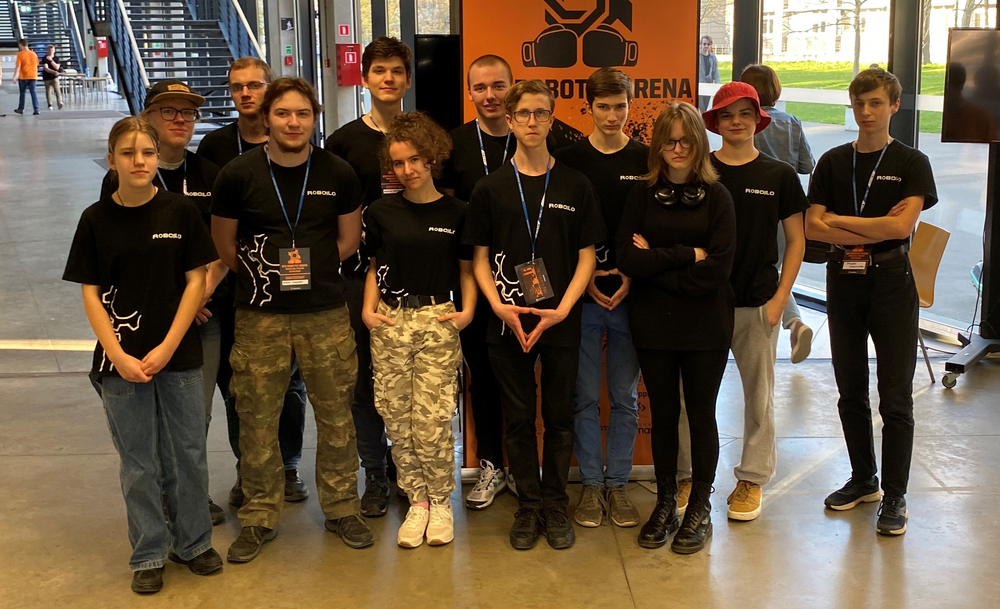
Robotic Arena 2023
II miesjce Sumo
22.04 nasza drużyna pojechała do Wrocławia na XIV zawody Robotic Arena organizowane przez Politechnikę Wrocławską. Na uczelni zebrało się niemal 300 robotów startujących w 17 różnych kategoriach. Udział braliśmy w 4 konkurencjach. Wyjechaliśmy z dziewięcioma robotami: 3x LineFollower, 2x MicroMouse, 5x Mini Sumo i 3x Sumo. Niestety, nasi młodsi uczestnicy napotkali się z różnymi trudnościami, aczkolwiek z tego właśnie powodu zawody były świetną okazją na naukę. Mimo problemów, wszyscy walczyli do końca. Każdy pomagał sobie nawzajem, nawet jeśli miało to trwać całą noc. Wszyscy się wspierali i mimo wszystko udało nam się zająć parę miejsc: I. II oraz IV w sumo II. IV w Mega Sumo III. IV w Mini Sumo IV. IV i V w LineFollower Zawody Robotic Arena opuściliśmy z nowymi, cennymi doświadczeniami i wiedzą dotyczącą naszych robotów. Dziękujemy Politechnice Wrocławskiej za organizację świetnego turnieju!
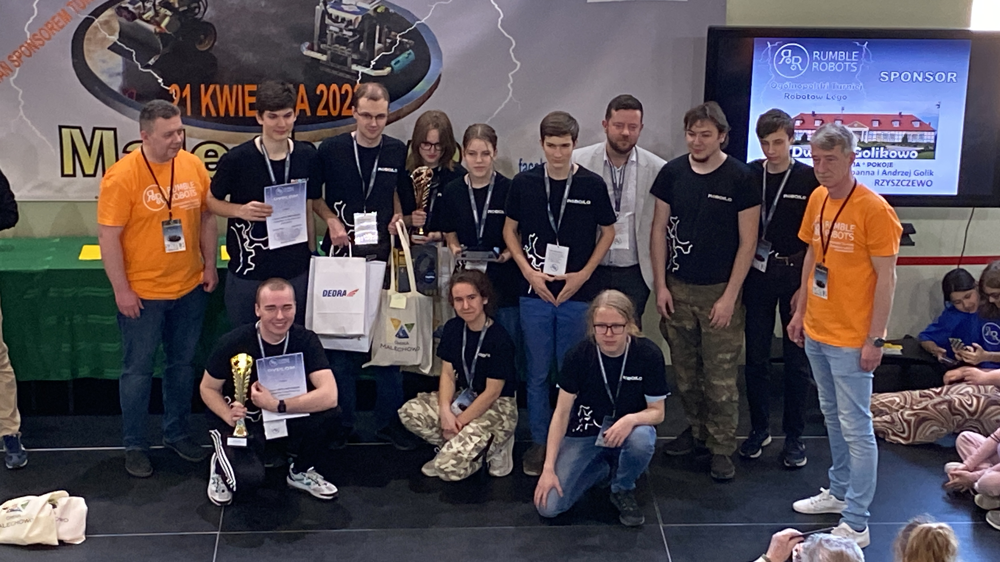
RumbleRobots 2023
I, III miesjce Line Follower
21.04.2023r. nasza drużyna pojechała na zawody Rumble Robots w Malechowie. Dla naszych pierwszoklasistów były to pierwsze zawody z własnymi robotami. Członkowie naszego klubu od miesięcy projektowali podstawy, budowali i programowali swoje roboty. Wzięliśmy udział w kategoriach takich jak line follower, lego line follower, lego sumo oraz lego minisumo. Zajęliśmy I oraz III miejsce w kategorii Line Follower. Oprócz tego, jeden z naszych zawodników zdobył wyróżnienie za postawę fair play. Dla młodszych zawodników zrobiliśmy prezentacje pokazującą nasze roboty oraz inne konstrukcje. Pokazaliśmy je także w akcji co spotkało się z wielkim entuzjazmem. Zawody były świetnie zorganizowane oraz wypełnione pozytywną energią ze strony zawodników oraz organizatorów. Mamy nadzieje, że zawody Rumble Robots będą kontynuować się rozwijać!
2022
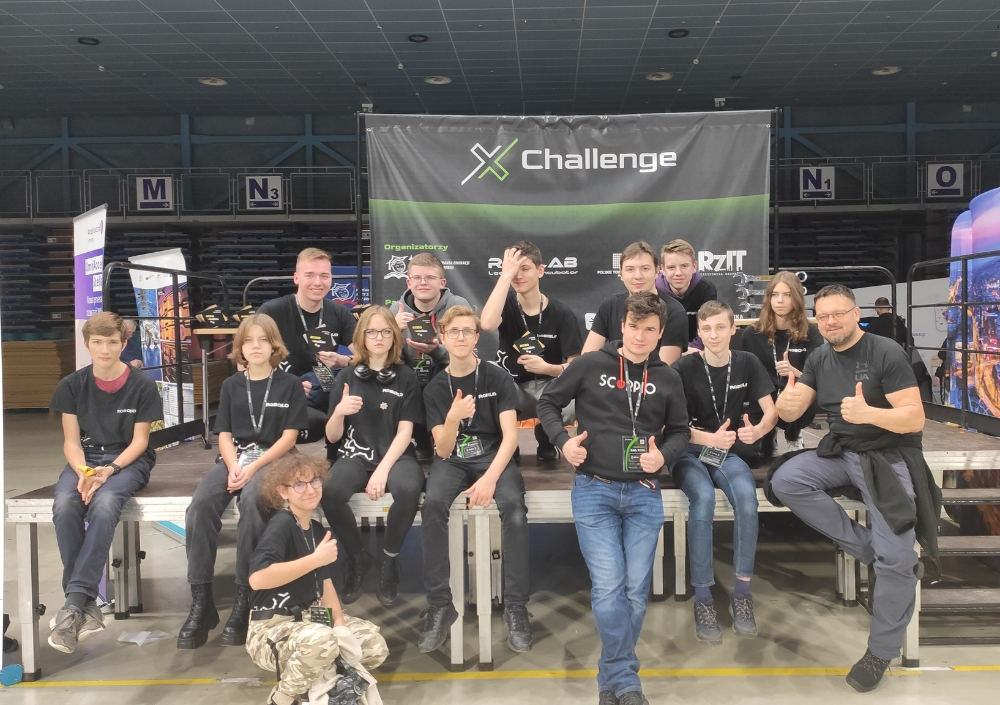
RoboMotion 2022
I, II, III miesjce Sumo
W sobotę 26.11.2022 Wystartowaliśmy w zawodach RoboMotion. W dość dużym, aż 13 osobowym składzie zameldowaliśmy się w Rzeszowie, gdzie z łącznie 12 robotami rywalizowaliśmy w 4 kategoriach. Najbardziej zaawansowani robotycy startowali w Sumo i Minisumo. Tutaj poszło jak się spodziewaliśmy, dobrze, ale czegoś jeszcze zabrakło. Zajęliśmy 1, 2, 3 i 4 miesce w Sumo. Niestety statuetki dostaliśmy tylko za pierwsze 3 🙁. Początkujący robotycy spróbowali swoich sił w zmaganiach Lego Sumo, gdzie aż 2 roboty doszły do ćwierć finału, co jest rewelacyjnym wynikiem podczas pierwszego startu. Gratulujemy zaanagarzowania, wytrwałości i zapału do pracy. Natomiast zawody to nie tylko sukcesy, ale okazja do poznania wspaniałych ludzi z pasją, obejżenia niesamowitych robotów i zapoznania się z tym wspaniałym światem robotyki.
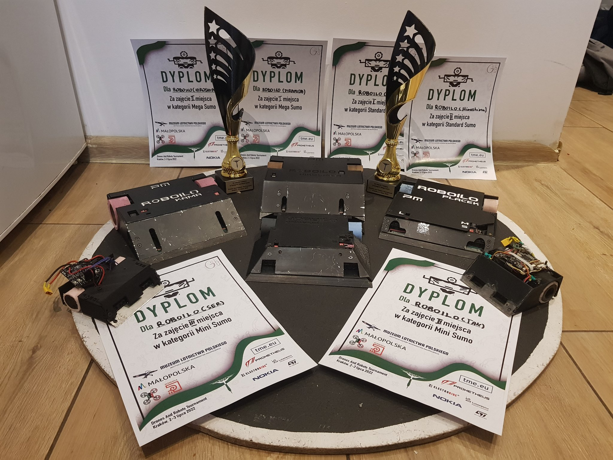
Dart 2022
I, II miejsce w Mega Sumo
I, II miejsce w Sumo
II, III miejsce w Mini Sumo
Wczoraj odbyły się zawody DART w Krakowie. Wystartowaliśmy w kategoriach Sumo, Mega Sumo i Mini Sumo. Jak zawsze nie obyło się bez drobnych problemów jednak ostatecznie wszystkie przygotowane roboty wystartowały. Dziekujemy bardzo firmie PROJEKTOWANIE MASZYN z Pruszcza Gd. za wsparcie w tworzeniu robotów. Bez Was na pewno nie udało by się nam osiagnać takiego sukcesu.
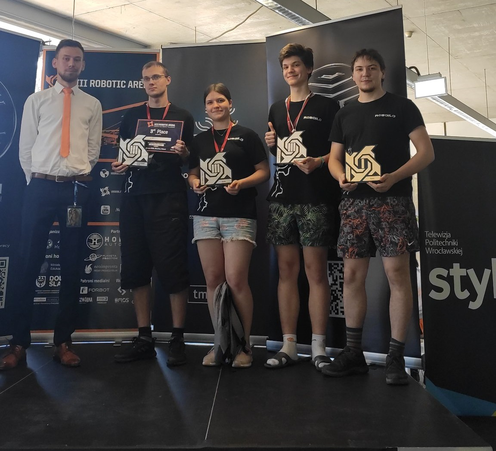
Robotic Arena 2022
I, III miejsce w Sumo
III miejsce w Mega Sumo
III miejsce w LineFollower Light
Właśnie zakończyły się zawody Robotic Arena we Wrocławiu. Wracamy zmęczeni ale z satysfakcją z osiągniętych sukcesów.
2021
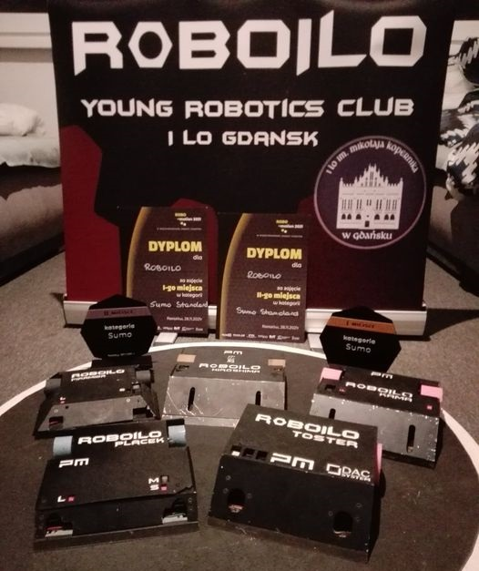
ROBOmotion 2021
I, III miejsce w Sumo
III miejsce w Mega Sumo
III miejsce w LineFollower
Właśnie zakończyły się zawody Robotic Arena we Wrocławiu. Wracamy zmęczeni ale z satysfakcją z osiągniętych sukcesów, a te zaskoczyły i nas.
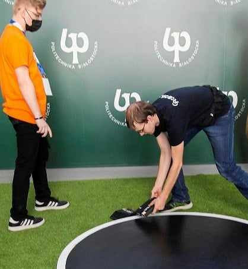
East Robo 2021
II, III miejsce w Sumo
Wystartowaliśmy w zawodach EAST ROBO 2021. Jest to pierwszy start po bardzo długiej przerwie, w większości z nowym składem. Tradycyjnie wystartowaliśmy w kategorii SUMO Standard, z naszymi sprawdzonymi konstrukcjami:
TOSTER, KAMA, PLACEK, oraz dwoma nowymi projektami. PIRAMIDA i HIROSHIMA. Nasi najmłodsi członkowie przygotowali samodzielnie roboty w kategorii LEGO SUMO. Jak na pierwszy start i zaledwie miesiąc przygotowań poszło im bardzo dobrze. Udało się zająć 4 miejsce. Ale co najważniejsze, to zdobyte doświadczenie, nauka i wspaniała atmosfera, jaka panuje na tego typu zawodach.
Dziękujemy wszystki, którzy pomogli nam osiągnąć ten sukces:
PROJEKTOWANIE MASZYN za ogromne wsparcie w budowie robotów, oraz Radzie Rodziców I LO w Gdańsku za dofinansowanie wyjazdu.
2020
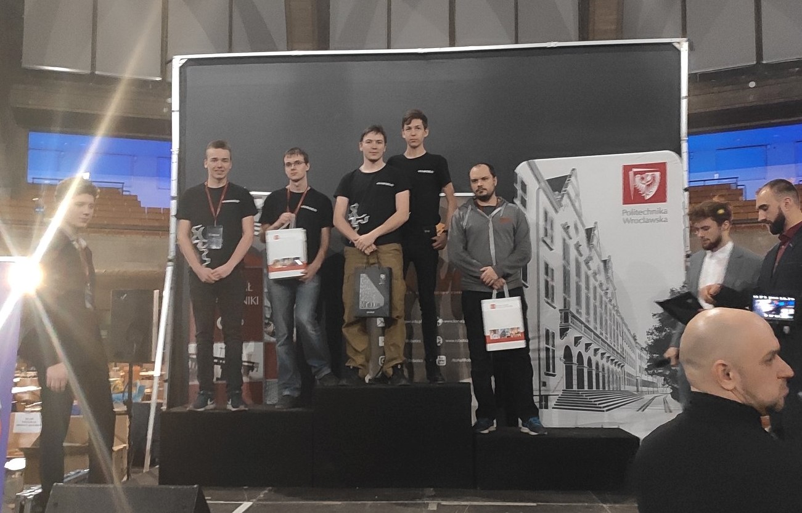
Robotic Arena 2020
I, II miejsce w Sumo
Wygrywamy Robotic Arena XII we Wrocławiu
Wczoraj wystartowaliśmy w Międzynarodowych zawodach robotyki we Wrocławiu. W hali stulecia zebrało się ponad 300 robotów z całego świata. Obiekt jak i rozmach zawodów zrobił na nas spore wrażenie. Przeciwnicy jak zwykle byli świetnie przygotowani, a walki bardzo wymagające.
Niestety zostało to okupione stratą Tostera, który podczas zawodów zrobił ze swoich sterowników grzanki,
na szczęście udało się go ugasić i mamy nadzieję, że jeszcze wróci do gry.
Dziękujemy za wsparcie w przygotowaniu robotów:
-Projektowanie Maszyn
-PKP Energetyka
-Galmex
2019
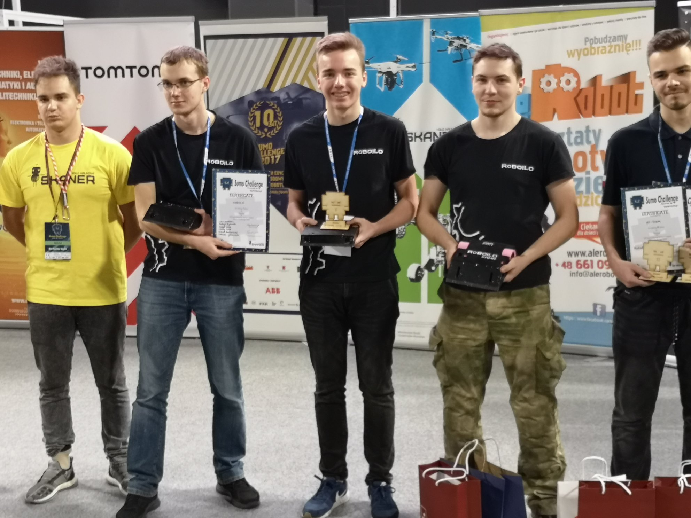
Sumo Challenge 2019
I miejsce Sumo
Międzynarodowe zawody Sumo Challange w Łodzi już od paru lat są stałym punktem naszego programu. Świetna organizacja imprezy, wspaniali ludzie, niepowtarzalna atmosfera i bardzo wysoko postawiona poprzeczka technologiczna, sprawiają iż są to prawdopodobnie najtrudniejsze a jednocześnie najfajniejsze zawody w kraju.
I w tym roku nie mogło nas tam zabraknąć.
Wystartowaliśmy w kategoriach Mega Sumo i Standard Sumo.
W Mega Sumo nie liczyliśmy na wiele, raczej potraktowaliśmy konkurencję jako testy wytrzymałościowe robota.
Prawdziwa rywalizacja odbyła się w kategorii Standard Sumo.
Toster i Placek doszły do 1/4 Finału. Kama po wcześniejszych ekstremalnych testach i z drobnymi uszkodzeniami zajęła I miejsce. Jest to trzecie z rzędu zwycięstwo w tym roku szkolnym i czwarte z rzędy w roku kalendarzowym.
Dziękujemy za wsparcie w przygotowaniu robotów:
-Projektowanie Maszyn
-PKP Energetyka
-Galmex
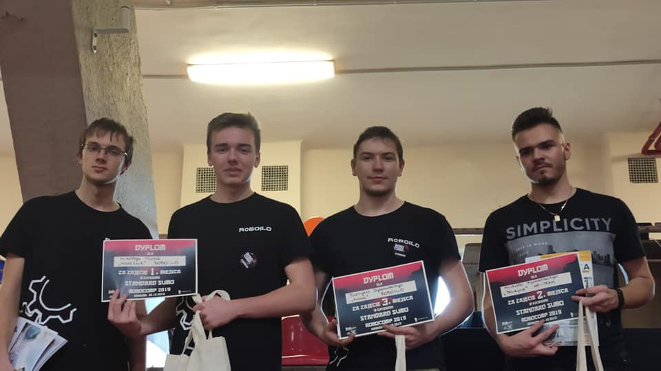
Robocomp 2019
I, III, IV miejsce w Sumo
Najbardziej doświadczeni robotycy wystartowali na ROBOCOMP 2019 organizowanym przez AGH w Krakowie. W zawodach wzięły flagowe roboty koła, "Toster", "Kama" a także debiutujący nowy projekt uczniów klas II - "Placek". Walcząc wyłącznie ze studentami uczelni technicznych i dorosłymi robotykami wyniki były bardzo podobne jak dzień wcześniej. Wszystkie 3 roboty bez problemów weszły do fazy pucharowej.
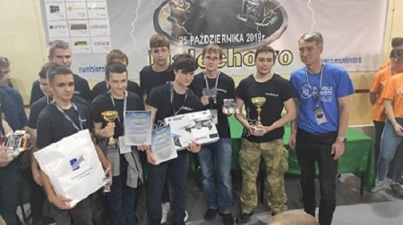
RumbleRobots 2019
I, III, w LegoSumo
Rumble Robots w SP Malechowo. Były to pierwsze zawody na które pojechali niemal wszyscy członkowie koła, jednocześnie był to debiut dla uczniów klas I. Zawody zakończyły się sukcesem. 3 konstrukcje weszły do fazy pucharowej.
Akademia Roboilo
Zapraszamy na wakacyjne zajęcia z robotami dla dzieci i młodzieży zainteresowanej robotyką, programowaniem czy drukiem 3d.
Wkrótce...Kontakt
Gdzie jesteśmy